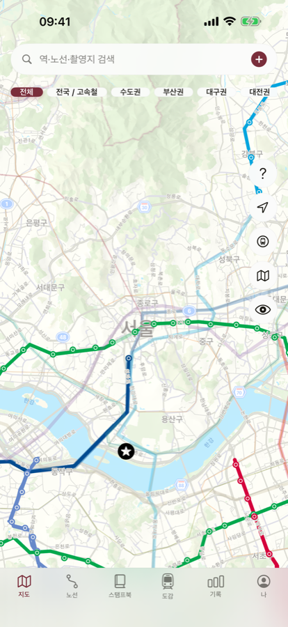
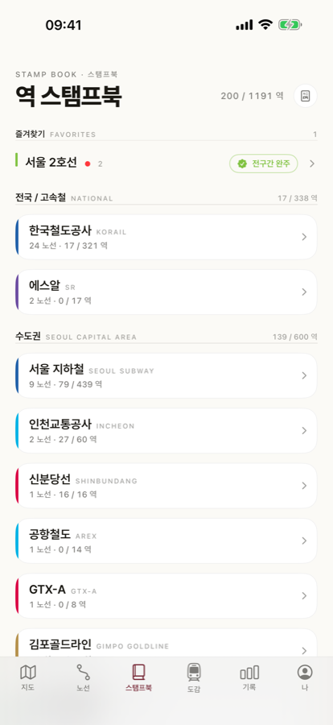
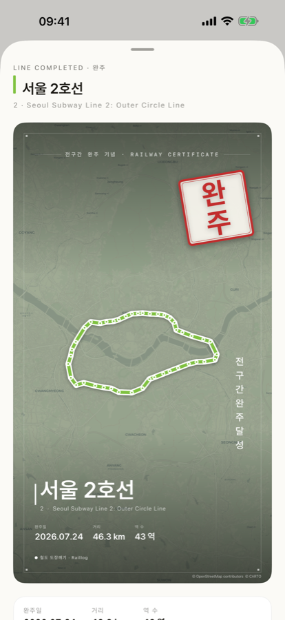

역을 탭하면 방문 체크. 탄 노선은 지도에서 진짜 노선 색으로 칠해지고, 스탬프북에 쌓입니다. 전국 17개 사업자·55개 노선 — 1호선부터 KTX·SRT까지.

예전에 탔던 노선도 소급해서 기록할 수 있어요. 역마다 사진과 메모도 남깁니다.
탄 노선이 지도에서 진짜 노선 색으로 칠해집니다. 안 탄 노선만 보는 필터로 다음 답사도 계획하세요.
방문한 역이 스탬프로 쌓이고, 노선을 끝까지 타면 「전구간 완주」 인장 카드가 등장합니다.
17개 사업자, 55개 노선, 1,191개 역 — 지하철부터 KTX·SRT까지 한 지도에서 답사합니다.


역마다 사진과 메모를 남길 수 있어요.
KTX-산천부터 무궁화호까지. 탄 차량과 본 차량을 따로 모읍니다.
방문일을 직접 고를 수 있어요. 오래전에 탄 노선부터 채워 넣으세요.
완주 카드를 9:16 비율로 인스타그램 스토리에 바로 공유.
iCloud로 기기를 바꿔도 기록이 이어지고, JSON·CSV로 백업·내보내기.
가입 없이 바로 시작하고, 오프라인에서도 기록할 수 있어요.
노선 열람 · 승차 기록 · 스탬프북 · iCloud 동기화는 모두 무료입니다.
Pro는 즐겨찾기 무제한, 상세 통계·17개 광역시도 히트맵, 워터마크 제거 공유 카드, PDF 스탬프북을 더합니다.